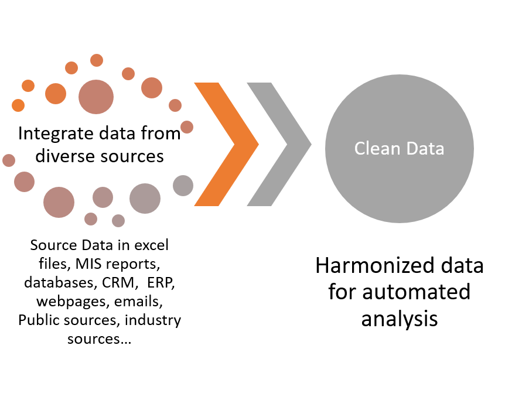
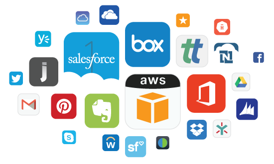
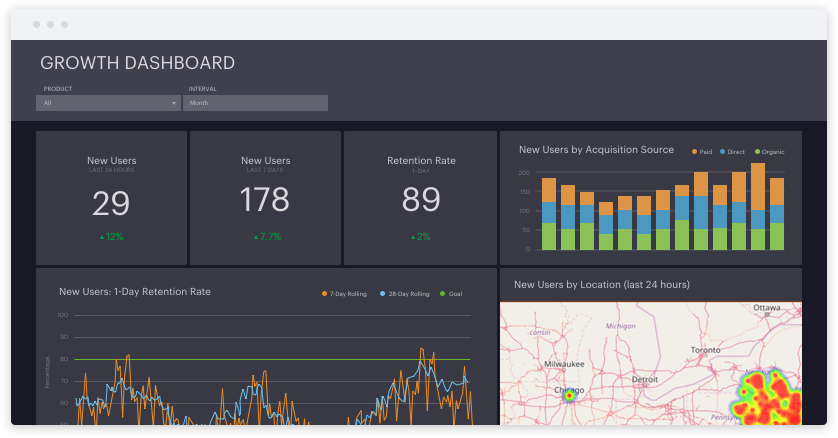

Breakthrough insights from advanced analytics can only be unleashed by combining data analytics and data science experts with latest tools and technology working on carefully chosen use cases to deliver measurable results.
We focus on three inter-related work streams: Big Data Research, Advanced Data Analytics and Data Pipeline Integration. To deliver, we build a multi-disciplinary team with required CxO level experience, data science expertise and knowledge of latest platforms and tools.
Every client has a unique operating environment which makes every analytics project unique. Our team members hold advanced academic qualifications and backgrounds in a range of complementary fields. Bizness Analytis can act as a single use case advisor, implementor alongside your team for key tasks, or provide fully managed solution providing end to end support.
As companies adopt data acquisition tools in every department, their analysis capabilities are falling short and making it difficult to unlock data's full potential.
The existing and new data solutions are moving to primarily cloud based services. However, the ability of companies to extract and load data across sources is preventing them from generating insights.
We can assist you from planning, re-designing and executing an effective and integrated data pipeline to transform into lever of success.
Data Transformation
Real world company data has many inaccuracies and inconsistencies. The data lies in silos of legacy IT systems and may have different schema and formats.
There are missing information, data entry errors, duplicate entries, wrong entries and other inconsistencies.
We design and deploy bespoke solutions using automated text mining, fuzzy matching and other state-of-the-art algorithms. By combining automated and semi-automated processes, an otherwise overwhelming administrative task is converted into a focused task that adds immediate value.
Data Source Stitching
Proliferation of IT systems and SaaS systems has created data fragmentation across organizations. As a result, analytics and reporting has become a nightmare. Self service tools with multiple input data connectors don't live upto expectations. The organizations need data stitching to let the silos talk to each other.
Having a centralized and normalized data allows for discovery of insights across silos. It allows the company to maintain consistent KPIs across the organization, and perform quick analysis on important questions.
We help you stitch your data sources, whether legacy on-premise or cloud based, into a single data pipeline that can be fed into your data visualization tools.
Integrate Machine Learning and AI
Technology firms have invested hundreds of billions of dollars in artificial intelligence and Machine Learning over the years. These systems drive their internal sytems however are also being increasingly shared with developers and data scientists.
We can help you add state-of-the-art intelligence to your business processes with a diverse selection of pre-trained services that provide predictions, forecasting, segmentation, clustering, recommendation engines, computer vision, speech, language analysis, chatbot functionality or others to your use cases.
Interactive Dashboards
For most use cases, the Data Pipeline goes through transformation of query results in a series of intuitive steps, gets treated by machine learning algorithms and ends up in visualizations that allows non data scientists to easily identify trends, patterns and outliers.
We can design powerful visualizations leveraging full power of the visualization tools such as data blending, drill downs, table joins, custom schemas, extrapolation, snapshots, data sharing, alerts, admin and much more.